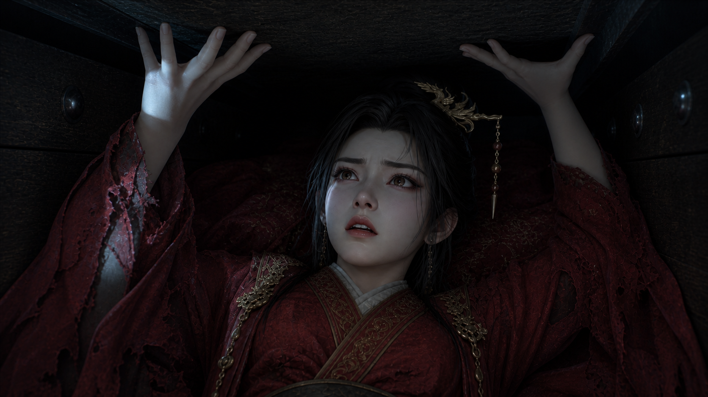
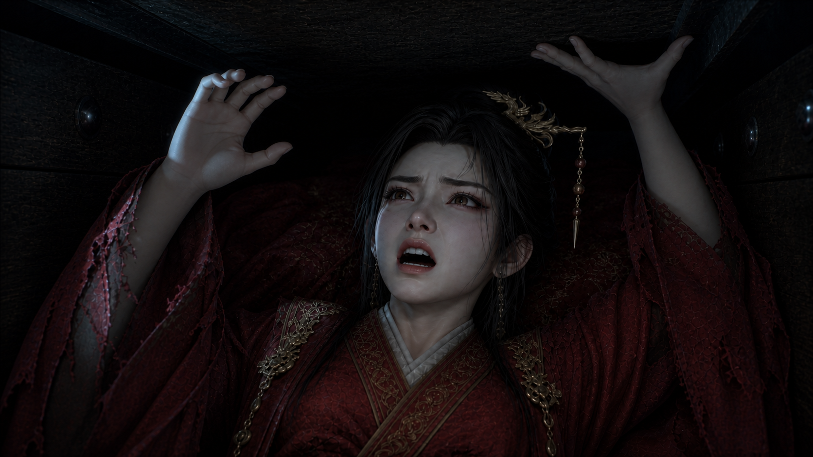
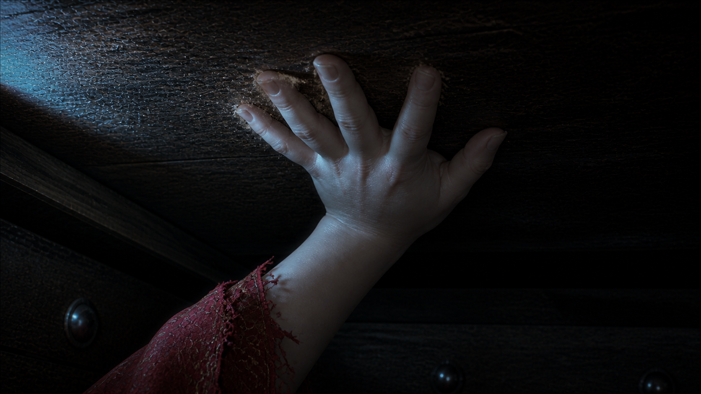
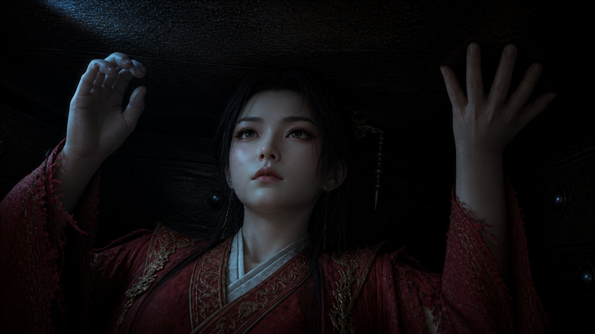
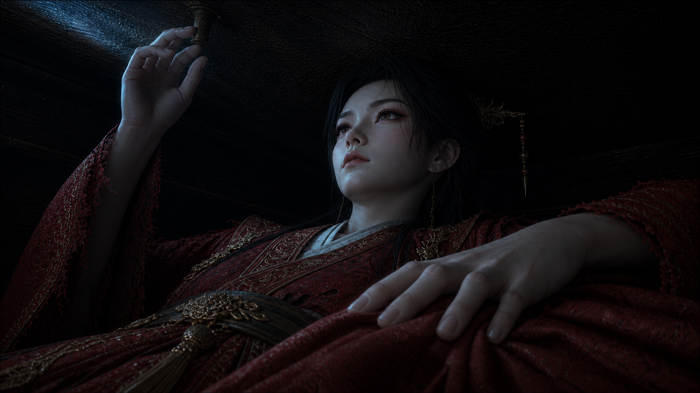

E01-01 分镜 A/B 对比
逐镜比较旧版与重制关键帧；重点检查手部、面部、冷光与棺木几何是否更清晰地服务动作目的。
旧版
新版
检查重点


CUT 01
惊醒与受限
先让惊醒可读，再以受困躯体和不对称撑顶说明棺盖无法撼动。


CUT 02
呼救到蓄力
呼吸与呼救先行；左手维持定向，右手撤回并蓄力拍击。


CUT 03
接触与回弹
孤立右掌与木盖接触、压缩和短促回弹，棺盖不产生位移。


CUT 04
静默认知
外部挣扎收束为闭唇、上望、收紧下颌与受限的浅呼吸。


CUT 05
左右手触觉证据
左手确认身下锦缎，右手确认头顶粗大铜钉，双触点同时冻结。